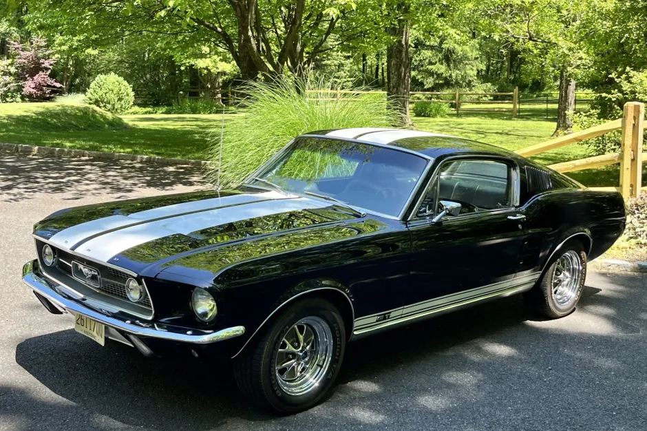
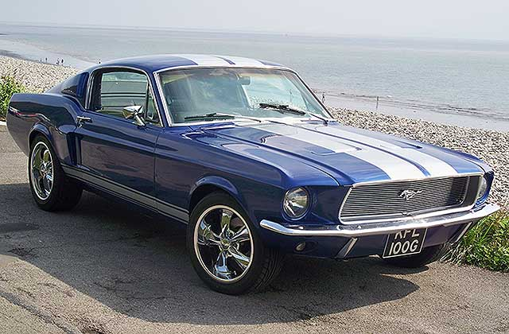

O Ford Mustang, lançado em 17 de abril de 1964 na Feira Mundial de Nova York, revolucionou o mercado automotivo ao criar o segmento "Pony Car" — carros esportivos, compactos e acessíveis. Inspirado em cavalos selvagens, o ícone de Lee Iacocca superou expectativas, vendendo mais de 250 mil unidades no primeiro ano, consolidando-se como um símbolo de potência e liberdade.

